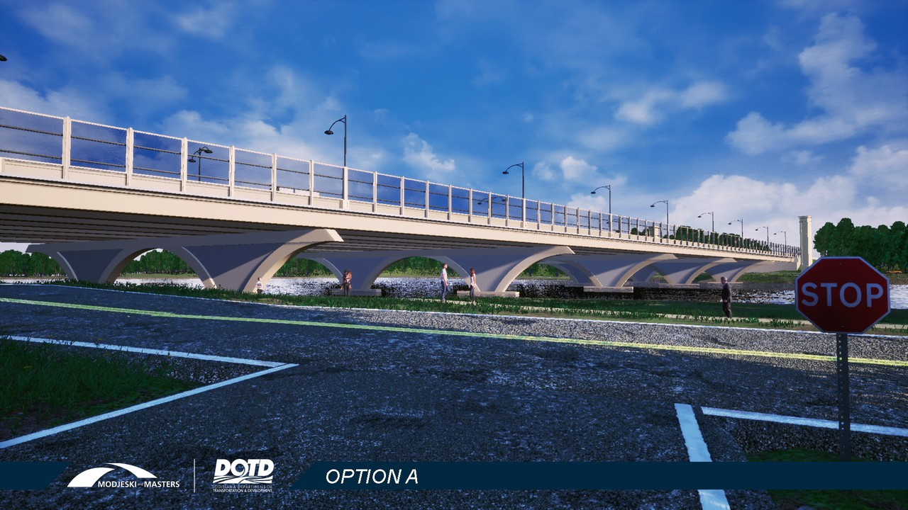
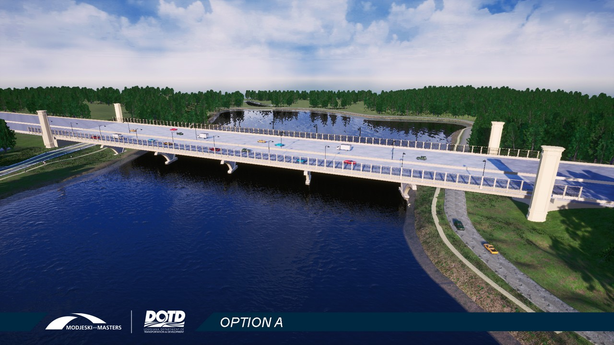
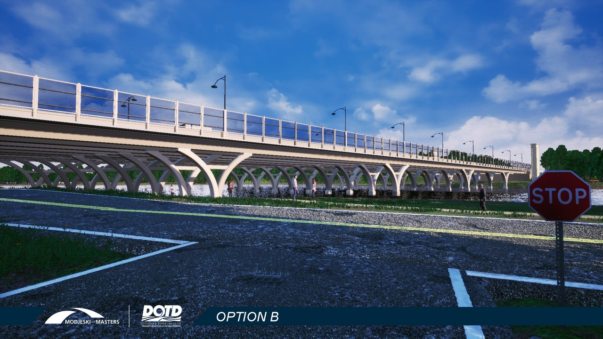
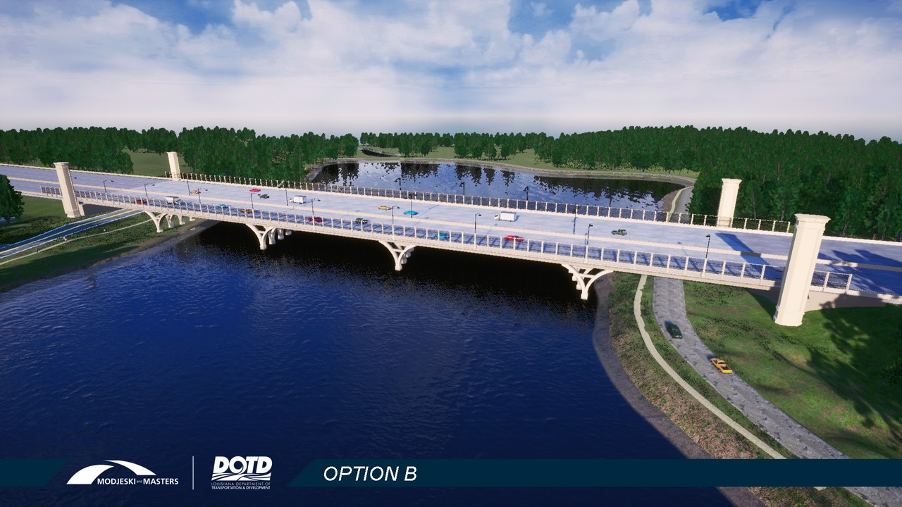
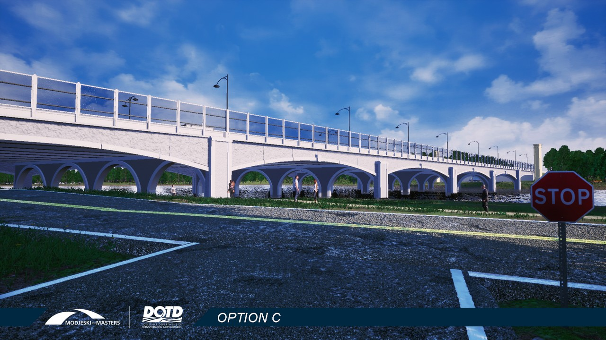
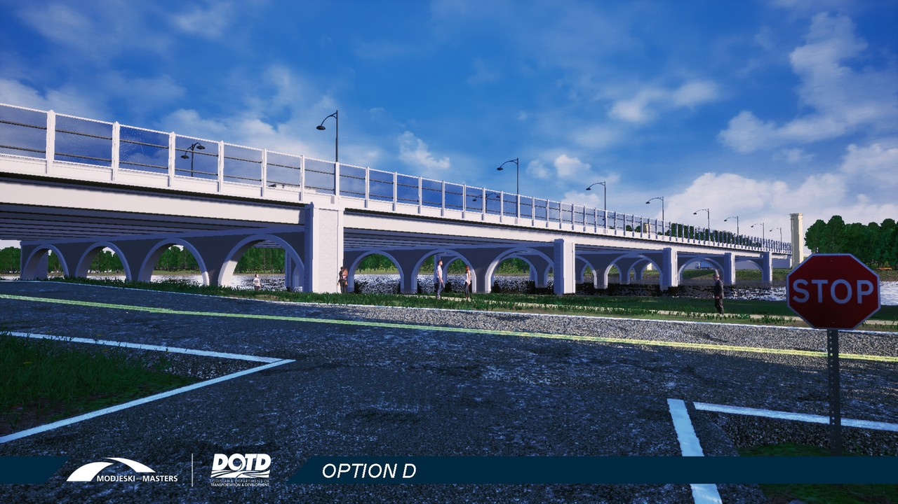
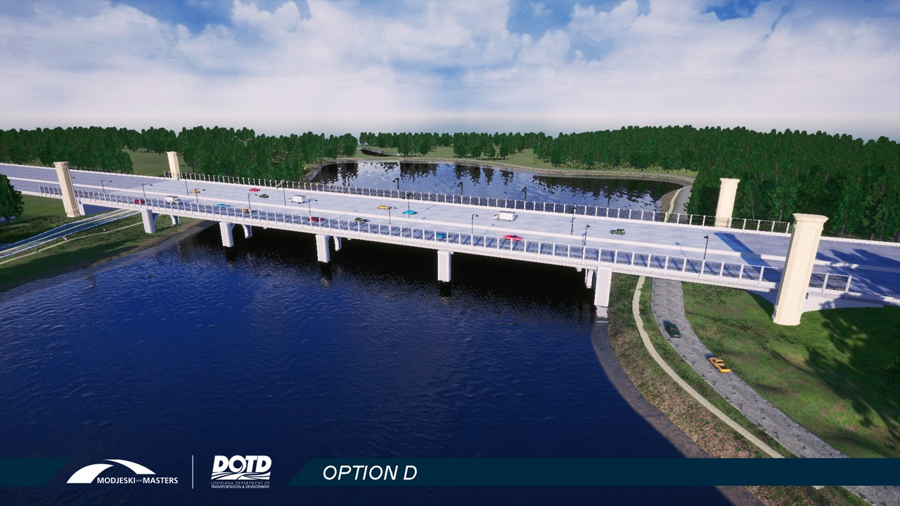
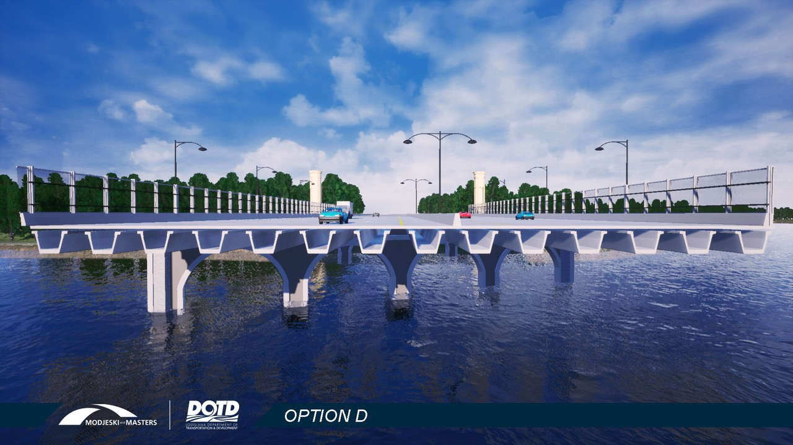

I-10 City Park Lake Bridge Design Preference Poll
The I-10 bridge over City Park Lake in Baton Rouge will be replaced as part of the I-10 Improvements Project. You are invited to see four design options and choose your favorite.This is a project of the Louisiana Department of Transportation and Development.
Proceed using the slide advance controls at the bottom center of this screen or by pressing the right arrow key. Mobile device users swipe left to advance.
Bridge Design Options
Four designs have been selected for your review and preference polling. Continue to the next slide to view more of each design before ranking your preferences at the end.
Assumptions
As you review the following images understand the following assumptions: There is no significant cost difference between the designs. All designs appear the same on top from the road deck. Towers depicted at the four corners of the bridge in each design and are drawn identically. A future step will refine the tower designs after the base bridge design is chosen.
 The road deck view for motorists on I-10 is the same for all designs.
The road deck view for motorists on I-10 is the same for all designs.
Bridge Option A
Three views of Option A show this design as viewed from street level, from the air, and from an end-on “section” view. Use the down arrow key or swipe up on your mobile device to view all three images.



Bridge Option B
Three views of Option B show this design as viewed from street level, from the air, and from an end-on “section” view. Use the down arrow key or swipe up on your mobile device to view all three images.



Bridge Option C
Three views of Option C show this design as viewed from street level, from the air, and from an end-on “section” view. Use the down arrow key or swipe up on your mobile device to view all three images.



Bridge Option D
Three views of Option D show this design as viewed from street level, from the air, and from an end-on “section” view. Use the down arrow key or swipe up on your mobile device to view all three images.



Design Preference Survey
Now it is your turn! Please use the poll below to rank the four bridge designs according to your preference. You may click here to open the survey question full screen.